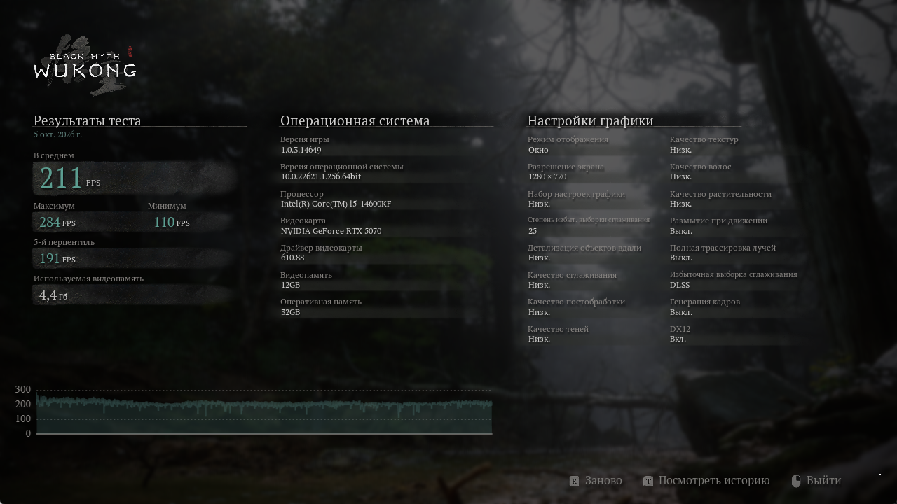
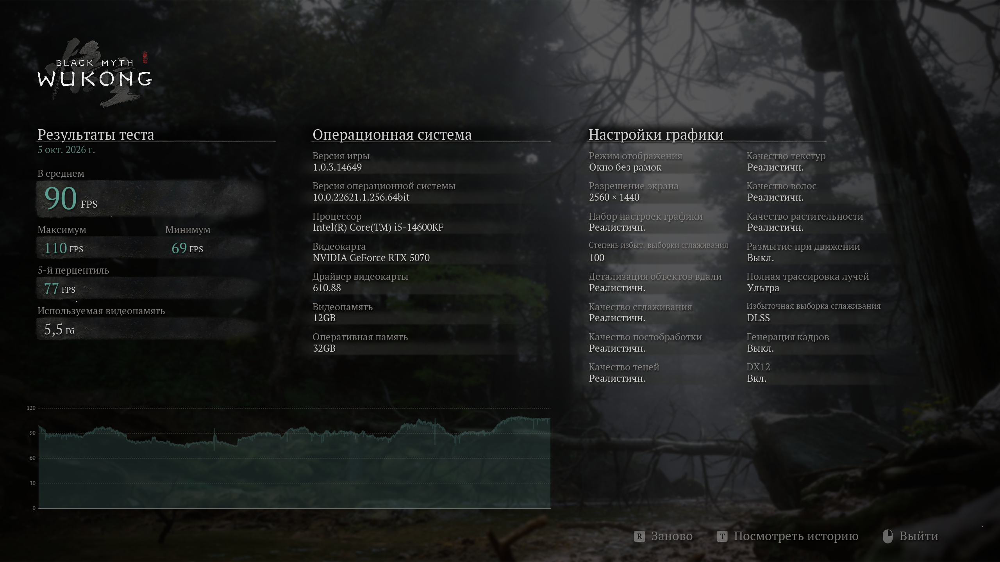
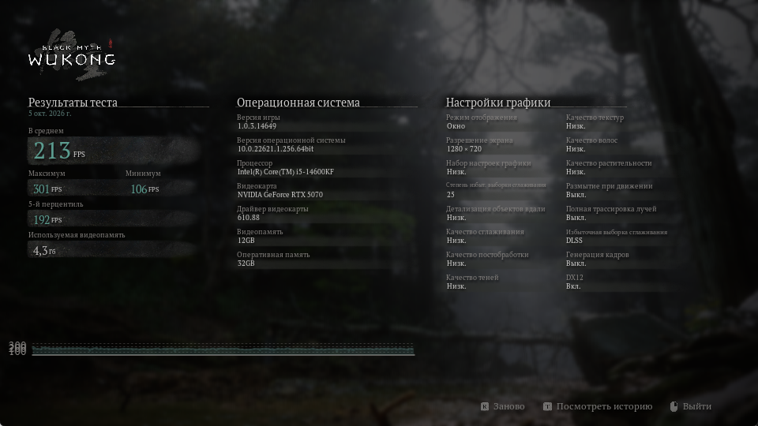

CPU · 1280 × 720
211 средний FPS
Низкое качество · масштаб 25%
Полная трассировка и генерация кадров выключены.
Минимум 110 · Максимум 284 · P5 191
Автоматизация Black Myth: Wukong Benchmark Tool на C#.
Два прохода, настройки и результаты из самого бенчмарка.
Низкое качество · масштаб 25%
Полная трассировка и генерация кадров выключены.
Минимум 110 · Максимум 284 · P5 191
Максимальное качество · масштаб 100%
Полная трассировка: ультра. Генерация кадров выключена.
Минимум 69 · Максимум 110 · P5 77
Профили используют разные настройки. Эти значения не являются сравнением скорости CPU и GPU между собой. P5 — 5-й перцентиль FPS из результата бенчмарка.
| Процессор | Intel Core i5-14600KF · 14 ядер / 20 потоков |
|---|---|
| Видеокарта | NVIDIA GeForce RTX 5070 · 12 GB |
| Оперативная память | 32 GiB |
| Система и драйвер | Windows build 22621 · NVIDIA 610.88 |
| Бенчмарк | 1.0.3.14649 · Steam build 15365379 |
| Параметр | CPU | GPU |
|---|---|---|
| Разрешение и режим | 1280×720, окно | 2560×1440, без рамок |
| Масштаб рендера | 25% | 100% |
| Качество | Низкое | «Реалистичн.», максимальное |
| Полная трассировка | Выключена | Ультра |
| Генерация кадров | Выключена | Выключена |
| VSync / лимит FPS | Отключены в конфиге | Отключены в конфиге |
CPU: уменьшение разрешения и качества снижает графическую работу на кадр. Контрольный проход при 960×540 дал 213 FPS: на 0,95% больше при уменьшении числа выходных пикселей на 43,75%. Это поддерживает выбор CPU-профиля на данном компьютере.
GPU: масштаб 100%, максимальная графика и полная трассировка увеличивают нагрузку на видеокарту. Отдельное наблюдение во время прохода показало 99% загрузки GPU; усреднённая телеметрия не собиралась.
Оба основных прохода выполнены одной командой без ручных действий в меню. Восстановление исходной конфигурации проверено по SHA-256.
OCR-текст · Применённые настройки · Настройки после прохода

OCR-текст · Применённые настройки · Настройки после прохода

960×540 · низкое качество · масштаб 25%. Средний FPS 213, минимум 106, максимум 301, P5 192. Исходный JSON.

В фоне оставались пользовательские приложения. Захват экрана и OCR также создают нагрузку, особенно заметную по минимумам FPS. Результаты подтверждают работоспособность инструмента; выбор CPU-профиля на другом оборудовании следует проверять отдельно.
Это оформленный пример реального запуска. Исходные JSON, OCR-текст и скриншоты сохранены без изменений. Из публичных копий INI удалён идентификатор монитора, резервная копия пользовательских настроек не включена. В необработанном OCR возможны ошибки в названиях оборудования.